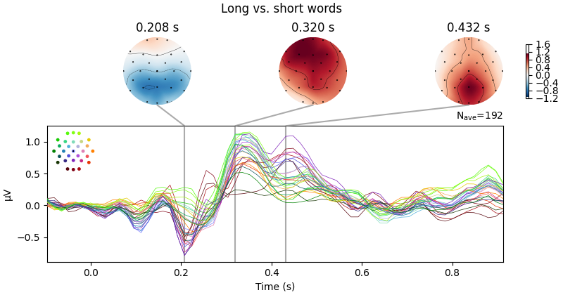
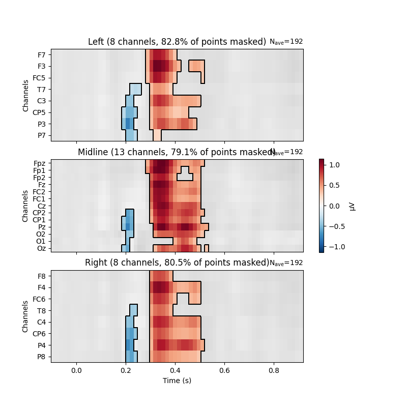

Note
Go to the end to download the full example code
Visualising statistical significance thresholds on EEG data#
MNE-Python provides a range of tools for statistical hypothesis testing and the visualisation of the results. Here, we show a few options for exploratory and confirmatory tests - e.g., targeted t-tests, cluster-based permutation approaches (here with Threshold-Free Cluster Enhancement); and how to visualise the results.
The underlying data comes from [1]; we contrast long vs. short words. TFCE is described in [2].
# License: BSD-3-Clause
# Copyright the MNE-Python contributors.
import matplotlib.pyplot as plt
import numpy as np
from scipy.stats import ttest_ind
import mne
from mne.channels import find_ch_adjacency, make_1020_channel_selections
from mne.stats import spatio_temporal_cluster_test
np.random.seed(0)
# Load the data
path = mne.datasets.kiloword.data_path() / "kword_metadata-epo.fif"
epochs = mne.read_epochs(path)
# These data are quite smooth, so to speed up processing we'll (unsafely!) just
# decimate them
epochs.decimate(4, verbose="error")
name = "NumberOfLetters"
# Split up the data by the median length in letters via the attached metadata
median_value = str(epochs.metadata[name].median())
long_words = epochs[name + " > " + median_value]
short_words = epochs[name + " < " + median_value]
Reading /home/circleci/mne_data/MNE-kiloword-data/kword_metadata-epo.fif ...
Isotrak not found
Found the data of interest:
t = -100.00 ... 920.00 ms
0 CTF compensation matrices available
Adding metadata with 8 columns
960 matching events found
No baseline correction applied
0 projection items activated
If we have a specific point in space and time we wish to test, it can be
convenient to convert the data into Pandas Dataframe format. In this case,
the mne.Epochs object has a convenient
mne.Epochs.to_data_frame() method, which returns a dataframe.
This dataframe can then be queried for specific time windows and sensors.
The extracted data can be submitted to standard statistical tests. Here,
we conduct t-tests on the difference between long and short words.
time_windows = ((0.2, 0.25), (0.35, 0.45))
elecs = ["Fz", "Cz", "Pz"]
index = ["condition", "epoch", "time"]
# display the EEG data in Pandas format (first 5 rows)
print(epochs.to_data_frame(index=index)[elecs].head())
report = "{elec}, time: {tmin}-{tmax} s; t({df})={t_val:.3f}, p={p:.3f}"
print("\nTargeted statistical test results:")
for tmin, tmax in time_windows:
long_df = long_words.copy().crop(tmin, tmax).to_data_frame(index=index)
short_df = short_words.copy().crop(tmin, tmax).to_data_frame(index=index)
for elec in elecs:
# extract data
A = long_df[elec].groupby("condition").mean()
B = short_df[elec].groupby("condition").mean()
# conduct t test
t, p = ttest_ind(A, B)
# display results
format_dict = dict(
elec=elec, tmin=tmin, tmax=tmax, df=len(epochs.events) - 2, t_val=t, p=p
)
print(report.format(**format_dict))
channel Fz Cz Pz
condition epoch time
film 0 -0.096 0.453939 0.232879 0.222424
-0.080 0.518939 0.214091 -0.371515
-0.064 0.811667 0.793636 0.250152
-0.048 0.039697 0.188636 0.318030
-0.032 -1.163030 -1.018939 -0.425152
Targeted statistical test results:
Fz, time: 0.2-0.25 s; t(958)=-0.661, p=0.509
Cz, time: 0.2-0.25 s; t(958)=-2.682, p=0.007
Pz, time: 0.2-0.25 s; t(958)=-3.238, p=0.001
Fz, time: 0.35-0.45 s; t(958)=5.304, p=0.000
Cz, time: 0.35-0.45 s; t(958)=5.684, p=0.000
Pz, time: 0.35-0.45 s; t(958)=6.508, p=0.000
Absent specific hypotheses, we can also conduct an exploratory mass-univariate analysis at all sensors and time points. This requires correcting for multiple tests. MNE offers various methods for this; amongst them, cluster-based permutation methods allow deriving power from the spatio-temoral correlation structure of the data. Here, we use TFCE.
# Calculate adjacency matrix between sensors from their locations
adjacency, _ = find_ch_adjacency(epochs.info, "eeg")
# Extract data: transpose because the cluster test requires channels to be last
# In this case, inference is done over items. In the same manner, we could
# also conduct the test over, e.g., subjects.
X = [
long_words.get_data(copy=False).transpose(0, 2, 1),
short_words.get_data(copy=False).transpose(0, 2, 1),
]
tfce = dict(start=0.4, step=0.4) # ideally start and step would be smaller
# Calculate statistical thresholds
t_obs, clusters, cluster_pv, h0 = spatio_temporal_cluster_test(
X, tfce, adjacency=adjacency, n_permutations=100
) # a more standard number would be 1000+
significant_points = cluster_pv.reshape(t_obs.shape).T < 0.05
print(str(significant_points.sum()) + " points selected by TFCE ...")
Could not find a adjacency matrix for the data. Computing adjacency based on Delaunay triangulations.
-- number of adjacent vertices : 29
stat_fun(H1): min=0.000001 max=80.917298
Running initial clustering …
Using 202 thresholds from 0.40 to 80.80 for TFCE computation (h_power=2.00, e_power=0.50)
Found 1856 clusters
0%| | Permuting : 0/99 [00:00<?, ?it/s]
1%| | Permuting : 1/99 [00:00<00:09, 9.88it/s]
2%|â– | Permuting : 2/99 [00:00<00:06, 15.00it/s]
3%|▎ | Permuting : 3/99 [00:00<00:05, 18.14it/s]
4%|â– | Permuting : 4/99 [00:00<00:05, 17.11it/s]
5%|▌ | Permuting : 5/99 [00:00<00:05, 16.52it/s]
6%|▌ | Permuting : 6/99 [00:00<00:05, 17.91it/s]
7%|▋ | Permuting : 7/99 [00:00<00:05, 17.32it/s]
8%|▊ | Permuting : 8/99 [00:00<00:04, 18.45it/s]
9%|▉ | Permuting : 9/99 [00:00<00:04, 19.44it/s]
10%|█ | Permuting : 10/99 [00:00<00:04, 18.72it/s]
11%|█ | Permuting : 11/99 [00:00<00:04, 19.55it/s]
12%|█■| Permuting : 12/99 [00:00<00:04, 20.22it/s]
13%|█▎ | Permuting : 13/99 [00:00<00:04, 19.48it/s]
14%|█■| Permuting : 14/99 [00:00<00:04, 18.90it/s]
15%|█▌ | Permuting : 15/99 [00:00<00:04, 18.43it/s]
16%|█▌ | Permuting : 16/99 [00:00<00:04, 18.04it/s]
17%|█▋ | Permuting : 17/99 [00:00<00:04, 18.66it/s]
18%|█▊ | Permuting : 18/99 [00:00<00:04, 19.25it/s]
19%|█▉ | Permuting : 19/99 [00:01<00:04, 18.80it/s]
20%|██ | Permuting : 20/99 [00:01<00:04, 19.31it/s]
21%|██ | Permuting : 21/99 [00:01<00:04, 18.02it/s]
22%|██■| Permuting : 22/99 [00:01<00:04, 18.55it/s]
23%|██▎ | Permuting : 23/99 [00:01<00:04, 18.22it/s]
24%|██■| Permuting : 24/99 [00:01<00:04, 18.69it/s]
25%|██▌ | Permuting : 25/99 [00:01<00:03, 19.13it/s]
26%|██▋ | Permuting : 26/99 [00:01<00:03, 18.75it/s]
27%|██▋ | Permuting : 27/99 [00:01<00:03, 18.43it/s]
28%|██▊ | Permuting : 28/99 [00:01<00:03, 18.89it/s]
29%|██▉ | Permuting : 29/99 [00:01<00:03, 18.56it/s]
30%|███ | Permuting : 30/99 [00:01<00:03, 18.99it/s]
31%|███■| Permuting : 31/99 [00:01<00:03, 18.66it/s]
32%|███■| Permuting : 32/99 [00:01<00:03, 19.10it/s]
33%|███▎ | Permuting : 33/99 [00:01<00:03, 19.52it/s]
34%|███■| Permuting : 34/99 [00:01<00:03, 19.93it/s]
35%|███▌ | Permuting : 35/99 [00:01<00:03, 19.53it/s]
36%|███▋ | Permuting : 36/99 [00:01<00:03, 19.94it/s]
37%|███▋ | Permuting : 37/99 [00:01<00:03, 19.54it/s]
38%|███▊ | Permuting : 38/99 [00:02<00:03, 19.19it/s]
39%|███▉ | Permuting : 39/99 [00:02<00:03, 19.59it/s]
40%|████ | Permuting : 40/99 [00:02<00:03, 19.24it/s]
41%|████■| Permuting : 41/99 [00:02<00:03, 18.92it/s]
42%|████■| Permuting : 42/99 [00:02<00:02, 19.31it/s]
43%|████▎ | Permuting : 43/99 [00:02<00:02, 18.99it/s]
44%|████■| Permuting : 44/99 [00:02<00:02, 19.38it/s]
45%|████▌ | Permuting : 45/99 [00:02<00:02, 19.76it/s]
46%|████▋ | Permuting : 46/99 [00:02<00:02, 19.40it/s]
47%|████▋ | Permuting : 47/99 [00:02<00:02, 19.07it/s]
48%|████▊ | Permuting : 48/99 [00:02<00:02, 18.78it/s]
49%|████▉ | Permuting : 49/99 [00:02<00:02, 18.51it/s]
51%|█████ | Permuting : 50/99 [00:02<00:02, 18.90it/s]
52%|█████■| Permuting : 51/99 [00:02<00:02, 18.62it/s]
53%|█████▎ | Permuting : 52/99 [00:02<00:02, 19.00it/s]
54%|█████▎ | Permuting : 53/99 [00:02<00:02, 18.72it/s]
55%|█████■| Permuting : 54/99 [00:02<00:02, 18.44it/s]
56%|█████▌ | Permuting : 55/99 [00:02<00:02, 18.82it/s]
57%|█████▋ | Permuting : 56/99 [00:02<00:02, 18.55it/s]
58%|█████▊ | Permuting : 57/99 [00:03<00:02, 17.74it/s]
59%|█████▊ | Permuting : 58/99 [00:03<00:02, 17.56it/s]
60%|█████▉ | Permuting : 59/99 [00:03<00:02, 17.39it/s]
61%|██████ | Permuting : 60/99 [00:03<00:02, 17.78it/s]
62%|██████■| Permuting : 61/99 [00:03<00:02, 18.15it/s]
63%|██████▎ | Permuting : 62/99 [00:03<00:02, 17.95it/s]
64%|██████▎ | Permuting : 63/99 [00:03<00:02, 17.76it/s]
65%|██████■| Permuting : 64/99 [00:03<00:01, 18.13it/s]
66%|██████▌ | Permuting : 65/99 [00:03<00:01, 18.50it/s]
67%|██████▋ | Permuting : 66/99 [00:03<00:01, 18.26it/s]
68%|██████▊ | Permuting : 67/99 [00:03<00:01, 18.05it/s]
69%|██████▊ | Permuting : 68/99 [00:03<00:01, 18.42it/s]
70%|██████▉ | Permuting : 69/99 [00:03<00:01, 17.62it/s]
71%|███████ | Permuting : 70/99 [00:03<00:01, 17.45it/s]
72%|███████■| Permuting : 71/99 [00:03<00:01, 17.29it/s]
73%|███████▎ | Permuting : 72/99 [00:03<00:01, 17.15it/s]
74%|███████▎ | Permuting : 73/99 [00:04<00:01, 17.01it/s]
75%|███████■| Permuting : 74/99 [00:04<00:01, 16.89it/s]
76%|███████▌ | Permuting : 75/99 [00:04<00:01, 16.77it/s]
77%|███████▋ | Permuting : 76/99 [00:04<00:01, 16.66it/s]
78%|███████▊ | Permuting : 77/99 [00:04<00:01, 16.56it/s]
79%|███████▉ | Permuting : 78/99 [00:04<00:01, 16.46it/s]
80%|███████▉ | Permuting : 79/99 [00:04<00:01, 16.37it/s]
81%|████████ | Permuting : 80/99 [00:04<00:01, 16.29it/s]
82%|████████■| Permuting : 81/99 [00:04<00:01, 16.18it/s]
83%|████████▎ | Permuting : 82/99 [00:04<00:01, 16.57it/s]
84%|████████■| Permuting : 83/99 [00:04<00:00, 16.94it/s]
85%|████████■| Permuting : 84/99 [00:04<00:00, 16.82it/s]
86%|████████▌ | Permuting : 85/99 [00:04<00:00, 16.71it/s]
87%|████████▋ | Permuting : 86/99 [00:04<00:00, 16.60it/s]
88%|████████▊ | Permuting : 87/99 [00:04<00:00, 16.50it/s]
89%|████████▉ | Permuting : 88/99 [00:04<00:00, 16.88it/s]
90%|████████▉ | Permuting : 89/99 [00:05<00:00, 16.76it/s]
91%|█████████ | Permuting : 90/99 [00:05<00:00, 16.65it/s]
92%|█████████â–| Permuting : 91/99 [00:05<00:00, 17.03it/s]
93%|█████████▎| Permuting : 92/99 [00:05<00:00, 16.90it/s]
94%|█████████â–| Permuting : 93/99 [00:05<00:00, 16.32it/s]
95%|█████████â–| Permuting : 94/99 [00:05<00:00, 16.24it/s]
96%|█████████▌| Permuting : 95/99 [00:05<00:00, 16.61it/s]
97%|█████████▋| Permuting : 96/99 [00:05<00:00, 16.51it/s]
98%|█████████▊| Permuting : 97/99 [00:05<00:00, 16.89it/s]
99%|█████████▉| Permuting : 98/99 [00:05<00:00, 16.77it/s]
100%|██████████| Permuting : 99/99 [00:05<00:00, 17.01it/s]
100%|██████████| Permuting : 99/99 [00:05<00:00, 17.71it/s]
362 points selected by TFCE ...
The results of these mass univariate analyses can be visualised by plotting
mne.Evoked objects as images (via mne.Evoked.plot_image)
and masking points for significance.
Here, we group channels by Regions of Interest to facilitate localising
effects on the head.
# We need an evoked object to plot the image to be masked
evoked = mne.combine_evoked(
[long_words.average(), short_words.average()], weights=[1, -1]
) # calculate difference wave
time_unit = dict(time_unit="s")
evoked.plot_joint(
title="Long vs. short words", ts_args=time_unit, topomap_args=time_unit
) # show difference wave
# Create ROIs by checking channel labels
selections = make_1020_channel_selections(evoked.info, midline="12z")
# Visualize the results
fig, axes = plt.subplots(nrows=3, figsize=(8, 8))
axes = {sel: ax for sel, ax in zip(selections, axes.ravel())}
evoked.plot_image(
axes=axes,
group_by=selections,
colorbar=False,
show=False,
mask=significant_points,
show_names="all",
titles=None,
**time_unit,
)
plt.colorbar(axes["Left"].images[-1], ax=list(axes.values()), shrink=0.3, label="µV")
plt.show()
- 
- 
No projector specified for this dataset. Please consider the method self.add_proj.
References#
Total running time of the script: (0 minutes 11.906 seconds)
Estimated memory usage: 120 MB